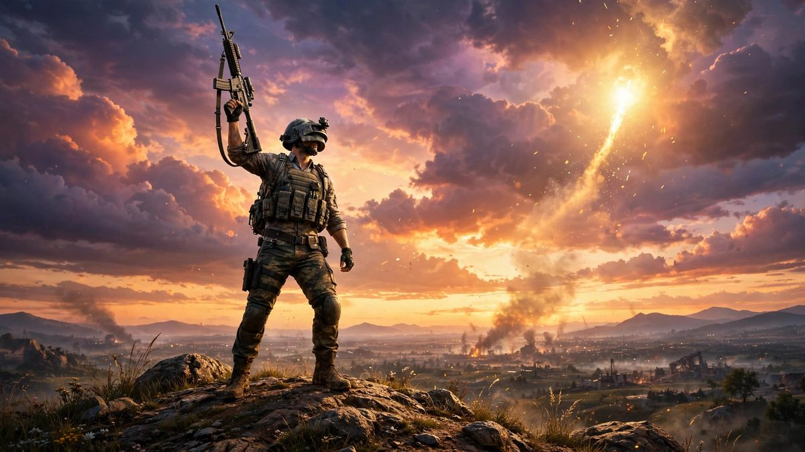

How to Win a Chicken Dinner: A Complete Endgame Guide

"Winner Winner Chicken Dinner" is the most satisfying message in PUBG, and one of the hardest to earn. Out of a hundred players, only one wins, and most matches are lost long before the final circle, through a bad landing, a careless rotation or a needless fight. Winning consistently is not about being the best shooter in the lobby. It is about making good decisions from the first minute to the last, arriving at the final circle healthy, well-equipped and in a strong position.
The Early Game: Loot Fast, Fight Smart
The match is won in the early game more often than players realise. Land somewhere with good loot and manageable traffic: major towns like Pochinki, School and Georgopolus have the best loot but the most enemies, while smaller compounds like Lipovka and Mylta offer solid gear with fewer early fights. Loot quickly and with a plan: weapon first, then armour, then healing, and get moving within two minutes. Do not spend five minutes in one compound while the zone moves away.
Fight only when the odds favour you: an enemy who does not know you are there, an enemy in the open while you hold cover, or an enemy you can third-party while they fight someone else. A fair fight in the open is a coin flip, and coin flips lose matches. Winning early fights gives you better loot; losing one ends the match.
The Mid-Game: Position Is Everything
Once you have decent loot, the mid-game is about positioning. Rotate early toward the centre of the next circle, take a strong position with cover, and let the zone bring the remaining players to you. A ridge, a compound with a clear view, or a building on the edge of the zone are all good positions. Avoid open fields and town centres, where enemies can shoot you from a dozen windows.
Mid-game checklist
- Level 2 or 3 vest and helmet, with reasonable durability.
- An assault rifle and a long-range weapon, both with enough ammunition.
- At least three first aid kits and several energy drinks or painkillers.
- Two or more smoke grenades and at least one frag grenade.
- A vehicle nearby, or a planned route to the next zone.
The Final Circles: Patience and Position
The final circles are a different game. There is little cover, every player is close together, and one mistake ends the match. The first rule of the endgame is to move early: as soon as the new circle appears, move to the best available position inside it. Take the high ground when you can, and take hard cover, a rock, a tree or a vehicle, over soft cover like a bush. Prone players are hard to spot, but easy to kill if an enemy knows where they are.
The second rule is to let others fight. When ten players remain, you do not need to shoot every enemy you see. Every shot reveals your position, and the players who shoot first are the players who get shot at by everyone else. Let the other players fight each other, watch where the shots come from, and only engage when you have a clear advantage or when the zone forces you to move.
Endgame priorities
| Players Left | Priority |
|---|---|
| 15-10 | Secure a strong position, stay quiet |
| 10-5 | Watch the others, let them fight each other |
| 5-3 | Use smokes to move, keep health full |
| Final 2-3 | Win the last fight with utility |
Winning the Last Fight
When two or three players remain, everything comes down to the final fight. First, fill your health and boost before the zone closes, not during the fight. Second, use your utility: throw a smoke between you and the enemy so you can move to a better angle, or throw a frag at their cover to force them out. Third, do not peek the same angle twice; change your position after every peek. Fourth, listen: the last enemy's footsteps, reloads and healing sounds tell you exactly what they are doing.
If you are the last player against a squad, play for the revive timers: knock one enemy, then hold the angle on the revive instead of chasing the knock. If you are in a squad, spread out into a loose arc, focus fire on one target at a time, and revive quickly behind smoke. The final fight is won by the player who stays calm and takes the shot only when it is a good one.
Frequently Asked Questions
How many kills do I need to win a chicken dinner?
None. You can win a match with zero kills by surviving, rotating well and letting other players eliminate each other, though most winners have between three and eight kills. Kills help because they give you better loot, but survival and positioning matter far more than your kill count.
Should I play aggressively or passively to win?
Play selectively aggressive. Take fights where you have the advantage and avoid fair fights in the open. The best winners are not the most passive players or the most aggressive ones, but the ones who choose their fights carefully and never fight on the enemy's terms.
What is the best loadout for the endgame?
An assault rifle like the M416 with a compensator and a 3x scope, plus a close-range weapon like a shotgun or submachine gun for the final circle, works well. Carry plenty of first aid kits, energy drinks, smoke grenades and frag grenades. By the endgame, utility and healing matter more than having the perfect weapon.
Download PUBG: Battlegrounds
Play free on PC or mobile — download the official game from the links below.